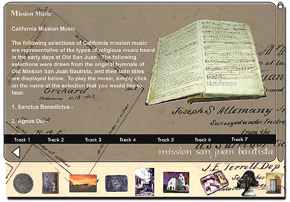

Screen 6: Under the eighth icon on the button bar, otherwise
known as "Mission Archives," the viewer will find a number of sub-menus
devoted to topics ranging from "Slide Shows" to "Mission Music."
In this instance, the mission music was recorded from the original scores
used in the earliest days of the mission. Dr. David Shaul, a renowned
ethnomusicologist, linguist, and harpist prepared the scores used in this
CD-ROM.
Text, Photographs, and Multimedia
Copyright Ruben G. Mendoza, 2000
Back Main